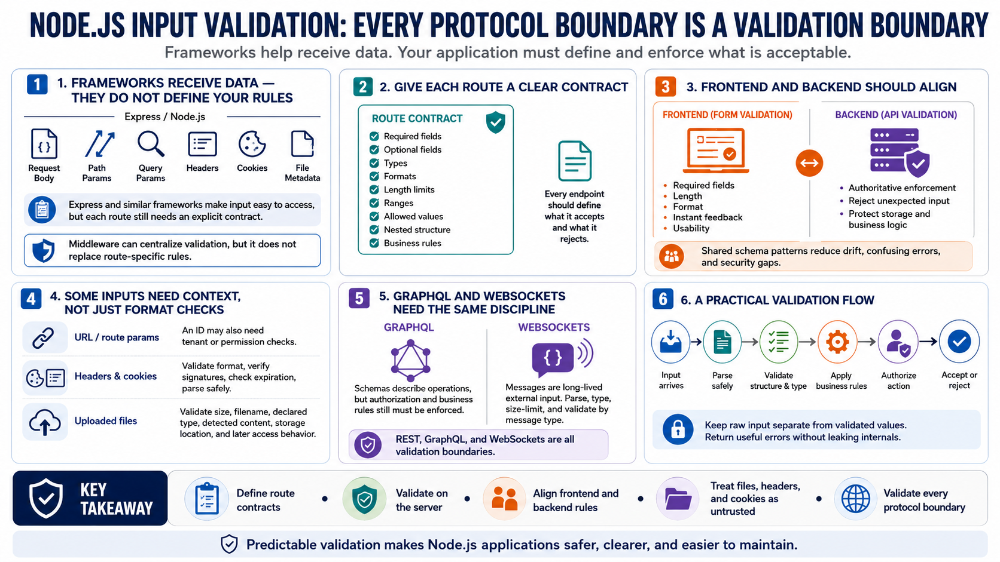

Validating Web and API Data
Connecting to LMS... Progress: in progress

Narration
Express and other Node.js frameworks make it easy to receive request data, but they do not automatically know the application's rules. Request bodies, path parameters, query parameters, headers, cookies, and file metadata all need explicit expectations. Middleware can help centralize validation, but each route should still have a clear contract for what it accepts.
Frontend form validation should align with server validation. A form might enforce required fields, length, and format for usability, while the API enforces the same rules authoritatively. When frontend and backend rules diverge, users get confusing errors and attackers get opportunities to submit data the server did not expect. Shared schema patterns can help reduce that drift.
URL and route parameters need context. A value that looks like an identifier may still need to match the authenticated user's tenant or permissions. Headers and cookies may require format checks, signature verification, expiration checks, and safe parsing. Uploaded files need validation of size, name, declared type, detected content, storage location, and later access behavior.
GraphQL and WebSocket inputs deserve the same care as REST APIs. GraphQL schemas describe operations, but authorization and business rules still need enforcement. WebSocket messages are long-lived external input and should be parsed, typed, size-limited, and validated by message type. Every protocol boundary is a validation boundary.